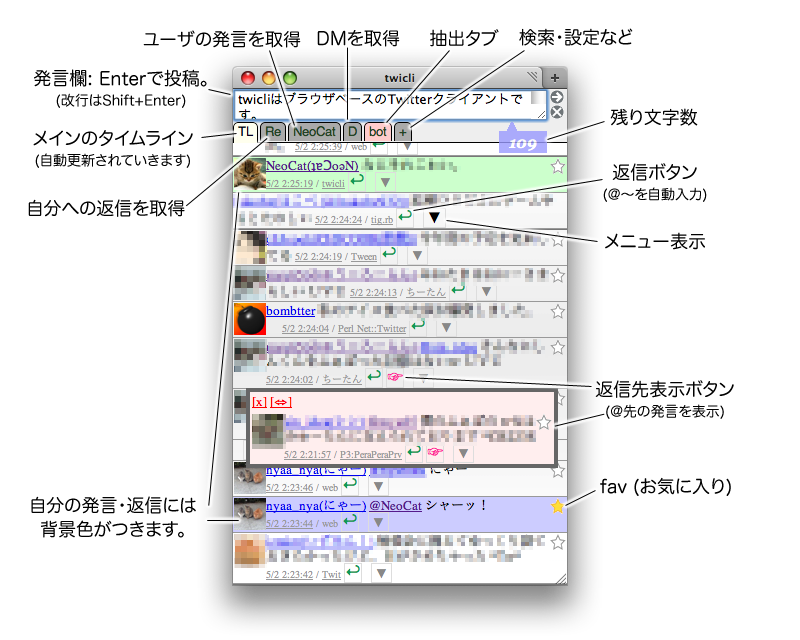

twicli


twicliはWebブラウザー上で動くTwitterクライアントです。
- Webブラウザ上で動くのでインストール不要、MacでもWinでもLinuxでも動きます。
- タイムラインを随時、自動的に取得してアニメーション表示していきます。
- 専用サーバなどは介さず、クロスドメインJavaScriptで直接Twitterにアクセスします。パスワード等がTwitter以外に送信されることはありません。
ネットカフェで他事しながらTwitterを眺めたいときなどに便利かも。
今のところFirefox, Safari, Operaで動いています。
iPhone/iPod touchのSafariでもOKです。
IE7・IE8でも、ステータスバーのプライバシーアイコンをダブルクリックし、手動でTwitter.comのCookieのブロックを解除すれば、一応動作するようです。
使い方
起動
上のリンク(bookmarklet)をクリック、またはブックマークにD&Dで登録して選択すると、別窓で起動します。
認証を求められたら、Twitterのアカウント／パスワードを入力してください。
あんまり激しくクリックしまくるとAPI制限(100回/1時間)にすぐ引っかかりますので、基本まったりご使用下さい。^^;
操作方法
 |
 |  |
抽出プラグインについて
ID/発言内容を元に抽出タブを作れます(regexp.jsプラグイン有効時)。詳しくはこちらを参照。
ソース
twicli.htmlが本体(HTML+CSS+JavaScript)。他にプラグイン、画像ファイルが要ります。
開発はCodeRepos上で行っています。パッチや勝手にコミット大歓迎です。なお、ライセンスはMITライセンスです。
不具合／要望などは私に@を飛ばして頂くと対応するかもしれません。